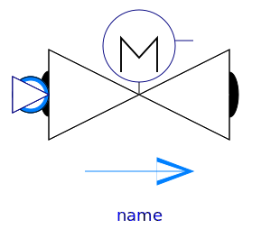

.
Modelica
.
Fluid
.
Valves
.
BaseClasses
Information
Base classes used in the Valves package (only of interest to build new component models)
Contents
Name
Description

PartialValve
Base model for valves
ValveCharacteristics
Functions for valve characteristics
Generated at 2018-09-28T09:15:45Z by
OpenModelica
OpenModelica 1.13.0~dev-1432-g3445e57